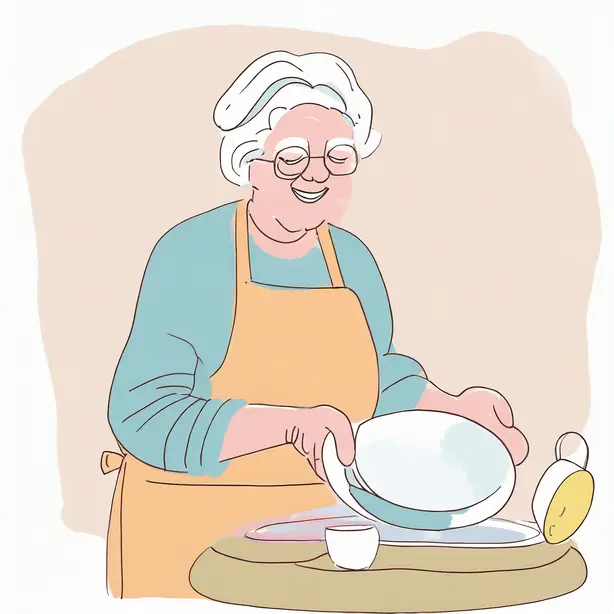

1. Piegare i panni puliti
1. Piegare i panni puliti
 2. Pulire la cucina
2. Pulire la cucina
 3. Lavare le finestre
3. Lavare le finestre
 4. Spolverare i mobili
4. Spolverare i mobili
 5. Rifare i letti
5. Rifare i letti
6. Mettere in ordine il frigo

7. Lavare i piatti
8. Lavare i pavimenti